Strawberry Jam Cultured Cheesecake | Served 2 ways
This raw, vegan, gluten-free, grain-free cheesecake is loaded with probiotic-rich nutrients; has a creamy, luxurious texture; and coats the mouth with a delicate kiss of strawberry freshness. That’s my story, and I’m sticking to it! Well, that’s not the whole story… I have more to share!
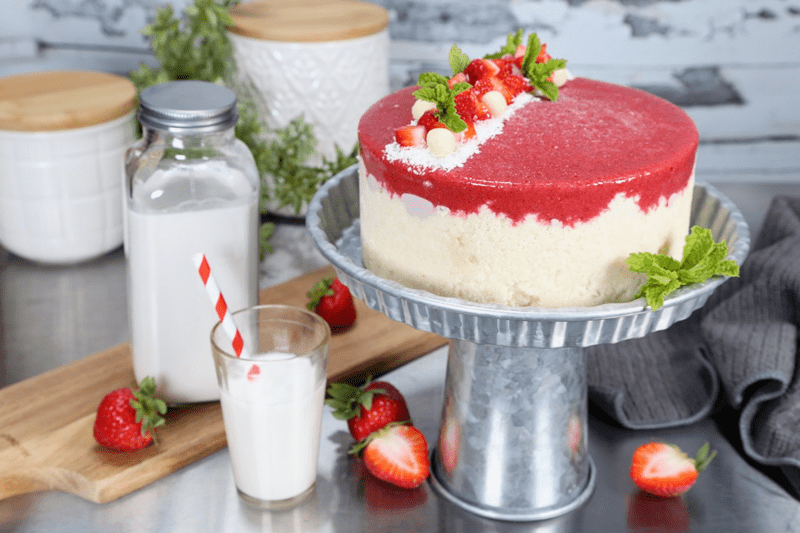
Actually, I didn’t get to eat any of this cheesecake. I am currently on the low-FODMAP protocol, and many of the ingredients are a no-no for me. But that didn’t stop me from creating it for our guests. It doesn’t matter if we are entertaining our loved ones or strangers… I always feed them the best-quality food I can. As individuals, it is our responsibility to treat others with love and respect, just as we would want to be treated, and that includes the foods we put in their bellies. Can I get an amen?!
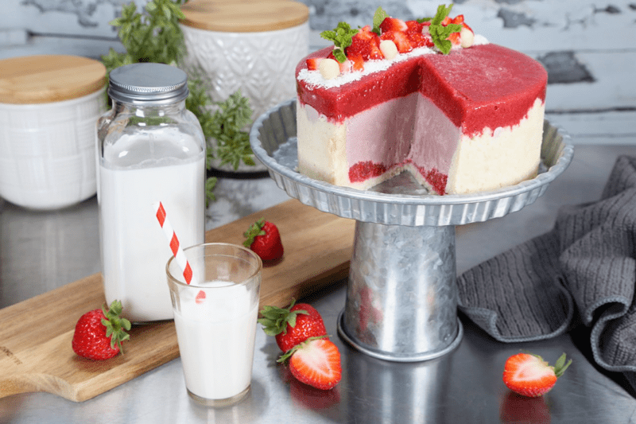
As the title indicates, this is a cultured cheesecake, but if you don’t have the time, or don’t have access to probiotics, you can pass on that part. However, in addition to the gut-healthy benefits of cultured cheesecakes, I love the extra tang culturing gives to the overall taste. By creating cheesecakes in your kitchen, you control the culturing time to fit your taste buds. Taste test throughout this step so you can find that perfect level of flavor.
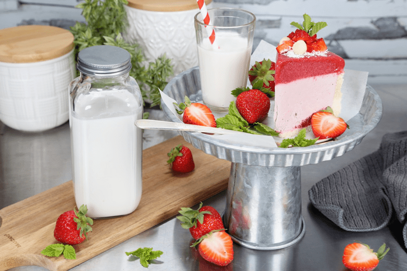
Since I was creating this dessert for a house party that we were hosting, I decided to split the batter and create two different versions. You see, in a few days, we will be hosting our bi-weekly music jam session at the house. I always serve healthy treats for these special people, because musicians get hungry! So, I created a 6″ Springform cake pan for the up-and-coming jam session, and then with the remaining batter, I made single-serving desserts for the house party. Time management at its best!
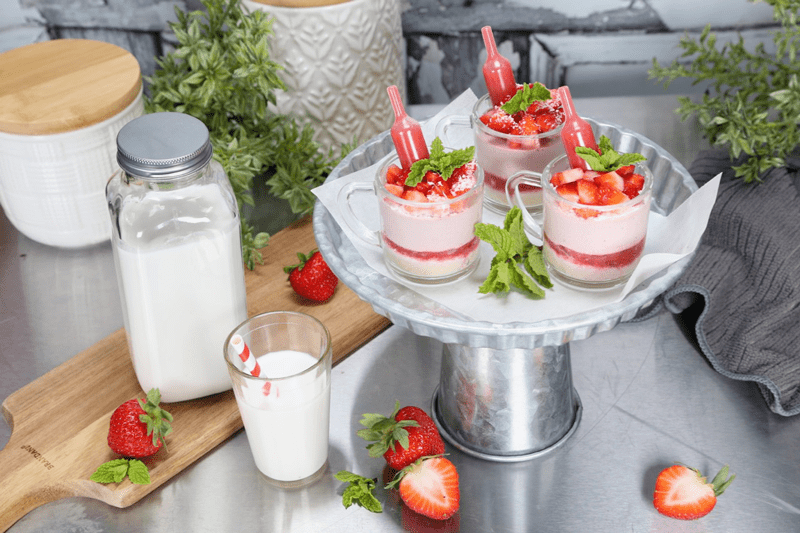
I simply adore small things. The trial-size aisle in the store… you know what I am talking about… I LOVE it. So, it doesn’t really surprise me that I like to make small desserts, and I find that single-serving desserts are PERFECT for social gatherings. There is no cutting, slicing, scooping, serving, or fork- balancing acts, which leaves more time for the host or hostess to enjoy the company.
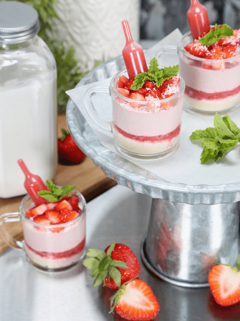
When people have to juggle plates and utensils, they tend to remove themselves from the standing crowds of chattering people to go eat their plated dessert at a table; this removes them from socializing. But when the dessert is a self-contained serving, they tend to eat their treat as they gracefully mingle from person to person.
This creates interaction and communication, and helps to cultivate relationships. Who knew the power of a little dessert cup?! For almost a decade now, I have been personally conducting this experiment when we invite people into our homes, and it’s been fun to witness the outcome.
I shared all this to say that it’s time to break the cake mold (not literally) and have fun being creative with how you present and serve a dessert. It breathes new life into a recipe each time you make it. Oh, I should mention a few other wonderful benefits to creating single-serving portions.
Portion Control
Just the words “portion control” sound boring and restrictive, as if a person should feel guilty about what they are about to eat, but this couldn’t be further from the truth. Raw desserts are rich in nutrients, but they are also rich in flavor, so a smaller portion is more filling and satiating than a wheat-and-sugar-laden piece of cake.
Presenting single servings prevents people from overeating and over-plating. When people see desserts, they lose all sense of reality; their pupils dilate, and they have tunnel vision. Their eyes are now larger than their belly, and they heap their plate full. The full plate either leads to waste, since they can’t eat it all, or they eat it all and curse your name later when they roll around with a belly ache. Not only do we want them to enjoy the dessert, but we also want them to feel good after doing so.
Preparation = Success
When you create single-serving desserts, you have an exact count of how many portions you have, unlike a whole cake, where you have to guesstimate how many slices you might get in the end, and often not as many slices as you have hoped for. If you are hosting a large gathering, it is so nice to have all these desserts made up ahead of time, as guests are gathering, you can simply remove the treats from the fridge and they are ready to go.
Less Mess, Snack ‘n’ Go
Lastly, (I know I am a chatterbox today, aren’t I?) raw cheesecakes freeze beautifully, and when they are in single-serving portions, you have desserts-on-demand without the hassle and fuss of cutting off slices as desired. I always keep our freezer stocked so Bob can have a treat whenever he craves one. Plus, should company pop in unexpectedly, you will get the “hostess with the mostest” award!
Well, it’s time to hop into the kitchen, dirty some dishes, create delicious food, and make the world a happier place. Please leave a comment below; I love hearing from you. blessings, amie sue
 Ingredients:
Ingredients:
Yields one 9” Springform Pan
Crust:
- 2 1/2 cups (232 g) shredded coconut
- 3/4 cup (106 g) raw almond flour
- 1/4 tsp (1 g) Himalayan pink salt
- 1/4 cup (50 g) melted coconut oil
- 6 Tbsp water
- 3 Tbsp maple syrup
Culture base:
Add in after culture:
Strawberry top and bottom layer:
- 4 cups (790 g) organic strawberries
- 2 Tbsp (50 g) maple syrup
- 4 tsp (48 g) chia seeds
Preparation:
Culturing the Filling: (optional step)
- First and foremost, make sure all of the utensils and pieces of equipment you use for culturing are sterilized to avoid growing bad bacteria. If at any time you see mold–fuzzy, black, or pink– it will need to be tossed.
- Drain the soaked cashews and discard the soak water. Place in a high-speed blender along with fresh water.
- Blend until the filling is creamy smooth. You shouldn’t detect any grit. If you do, keep blending.
- This process can take 2-4 minutes, depending on the strength of the blender. Keep your hand cupped around the base of the blender carafe to feel for warmth. If the batter is getting too warm, stop the machine and let it cool. Then proceed once cooled.
- Add the probiotic powder and prebiotic powder, blending long enough to incorporate the powders.
- Pour into a glass bowl, cover, and set on the countertop to culture for 24 +/- hours. The culturing time frame can vary depending on warm it is in the house.
- You can speed up the culturing process by placing the bowl in the cavity of your dehydrator (Excalibur), setting it on the lowest temp.
- Check after 6 hours and continue until it reaches a tangy taste.
Crust
- Assemble a Springform pan with the bottom facing up, the opposite way from how it comes assembled. This will help you when removing the cheesecake from the pan, not having to fight with the lip.
- Wrap the base with plastic wrap, which will make it easier to remove the cheesecake when done… unless you plan to serve the cake on the bottom of the pan.
- In the food processor, fitted with the “S” blade, pulse the coconut, almond flour, and salt together.
- Be careful that you don’t overprocess and head toward making a nut butter. Nothing wrong with that… just not our goal at the moment.
- Add the coconut oil, water, and sweetener. Process until the batter sticks together.
- Depending on your machine, you may need to stop the unit and scrape the sides down during this process.
- Test the batter by pinching it between your fingers. If it holds, it is ready.
- Distribute the crust evenly on the bottom of the pan, using gentle pressure.
- If you press too hard, it might stick to the base of the pan, making it hard to remove slices.
- You can either just make the crust just on the bottom of the pan, or you can also bring it up the sides. It is up to you.
- You will see in the photos below that I created a “rustic”-looking crust where I brought the crust partially up the sides of the pan in an uneven pattern. This was on purpose.
- Set aside while you make the cheesecake batter.
Strawberry Layers
- Place the strawberries, maple syrup, and chia seeds in the blender. Blend on high until it is completely smooth in texture.
- Divide the mixture in half (setting aside one portion for the top layer) and pour it into the base of the crust.
- Set in the freezer until it is firm to the touch.
- I didn’t have the time to do this, and you can see in the photo above that the bottom strawberry layer isn’t even. That’s because the weight of the next layer caused it to spread and push it up the sides.
Filling Completion (after culturing)
- In a high-powered blender, combine the cultured cashew cream, strawberries, sweetener, lecithin, lemon juice, and salt.
- You can use a different liquid sweetener if you are not comfortable with maple syrup and or stevia.
- The sweetener is added after the fermenting is complete; otherwise, undesirable yeast will be produced.
-
With a vortex going in the blender, drizzle in the coconut oil, and then add the lecithin. Blend just long enough to incorporate everything together. Don’t overprocess. The batter will start to thicken.
-
What is a vortex? Look into the container from the top and slowly increase the speed from low to high, the batter will form a small vortex (or hole) in the center. High-powered machines have containers that are designed to create a controlled vortex, systematically folding ingredients back to the blades for smoother blends and faster processing, instead of just spinning ingredients around, hoping they find their way to the blades.
-
If your machine isn’t powerful enough or built to do this, you may need to stop the unit often to scrape the sides down.
-
Remove the pan from the freezer with the firm strawberry layer and pour the batter into the pan.
-
Gently tap the pan on the counter to remove any air bubbles.
-
Chill in the freezer till firm to the touch
- Now add the remaining strawberry mixture by pouring it over the top of the cheesecake.
- Chill in the freezer for 6+ hours or overnight.
- The texture and flavor of the cake are best when slightly thawed.
- Decorate and serve.
Decorating Tip:
- If using fresh fruit and/or mint leaves, decorate right before serving so they don’t brown or wilt.
- For a whimsical effect, I added little plastic pipettes filled with some of the strawberry puree that I created for the cake layers. Once they are filled, you poke them into the batter, which prevents them from leaking. When serving the dessert, I instructed everyone to pull the pipette out and squirt the puree on the top of the dessert, or directly into their mouth. They loved it!
To Create the Cake
To Create the Single Serving Cups
-
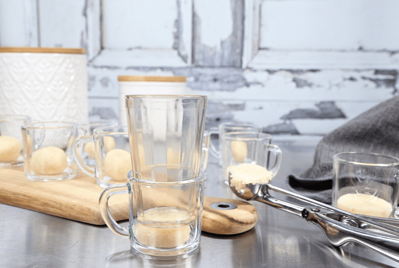
-
Place crust ball in the cup.
-
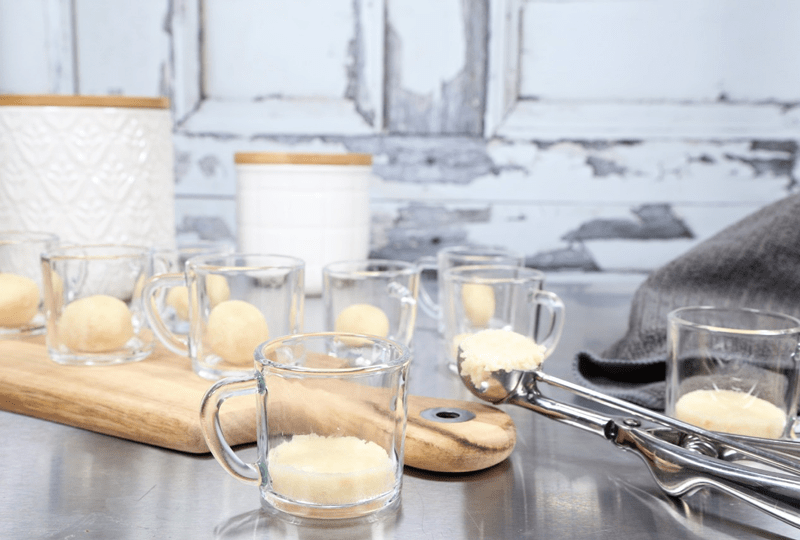
-
Press the crust even and flat, making sure that you don’t have any gaps between the crust and glass.
-
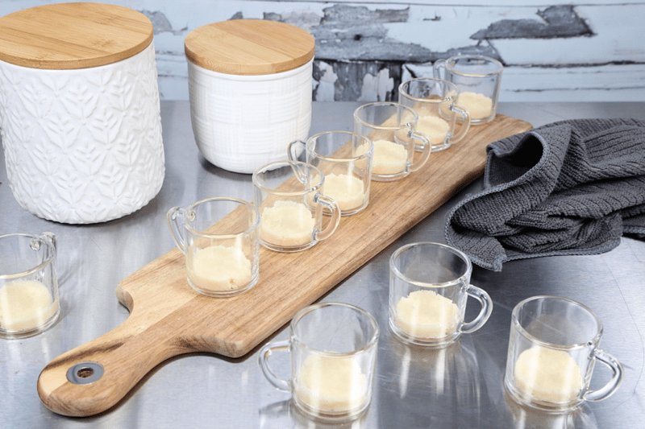
-
Repeat until all cups have the crust set within them.
-
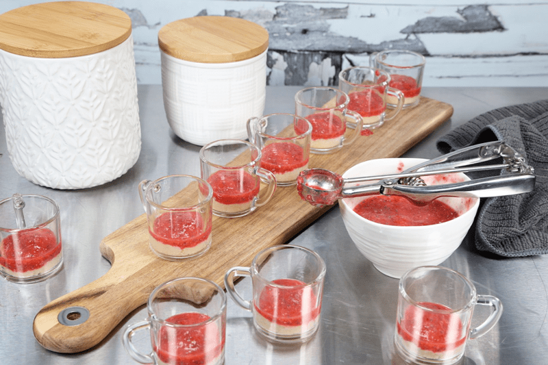
-
Add a layer of strawberry jam. If you have the time, freeze in between each layer so they set.
-
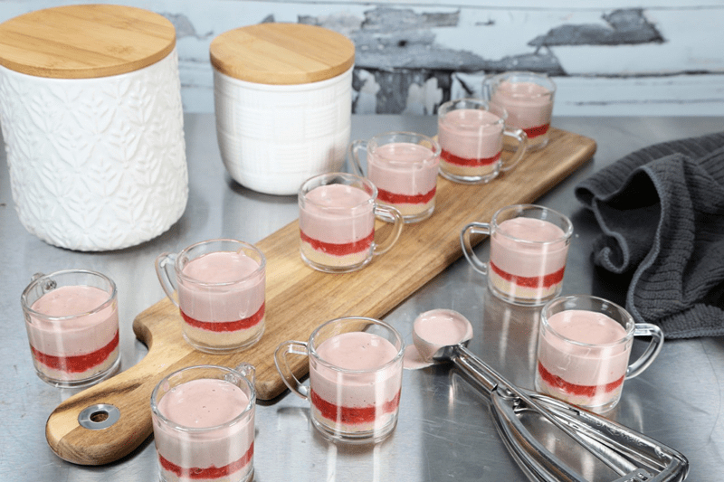
-
Add the strawberry filling.
-
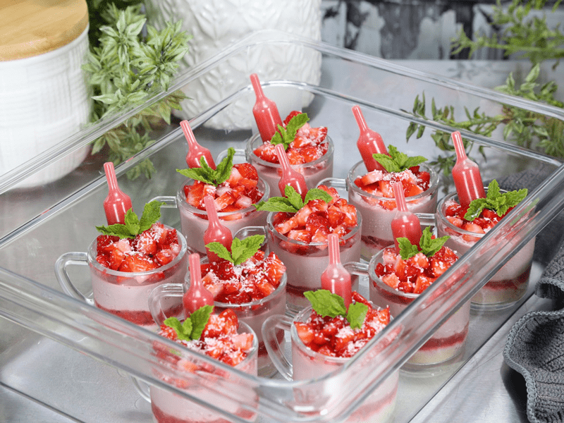
-
Decorate the tops as you wish
© AmieSue.com